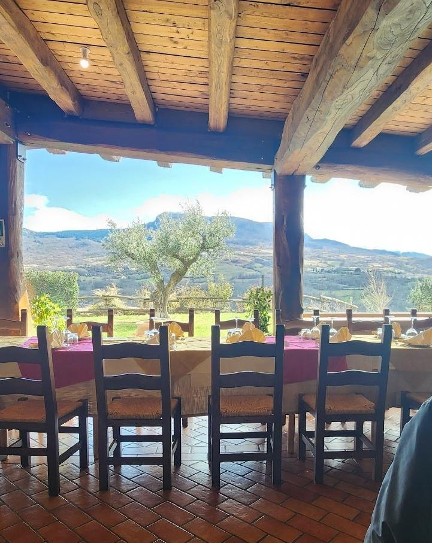
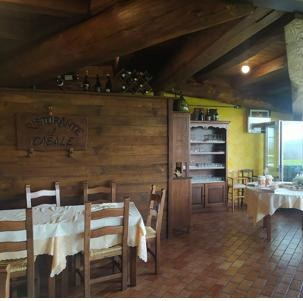
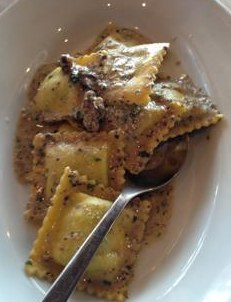
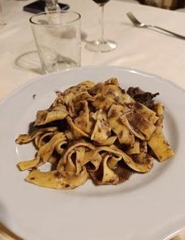
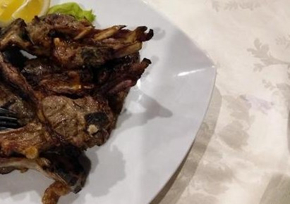
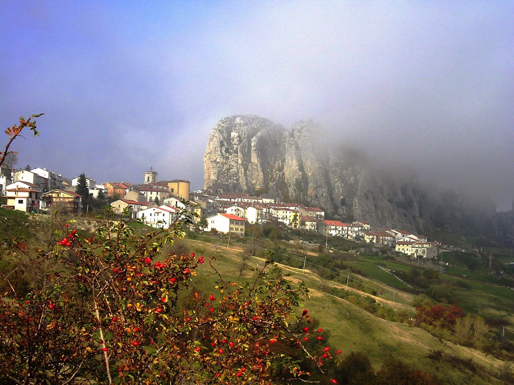

Antipasti
Caldi e freddi, in più portate. Tagliere, bruschette, pizzette fritte, polentine.

Pizzoferrato · Majella · Abruzzo
La tavola con vista sulla Majella
Cucina abruzzese di montagna, porzioni generose, vallata davanti agli occhi. Il pranzo che gli ospiti raccontano da anni — ora, finalmente, raccontato anche online.
Chi siamo
Il Casale è un ristorante a Pizzoferrato, nel Parco Nazionale della Majella. Gli ospiti lo descrivono sempre allo stesso modo: antipasti che non finiscono, pasta fatta in casa, carne alla brace, dolci e liquori della casa — e una vetrata sulla vallata.
In sala c’è Carmine, il titolare. Nelle recensioni tornano anche i nomi di Fernanda e Michele. Non abbiamo ancora l’anno di apertura né la storia della famiglia: questa pagina è pronta per le vostre parole, non per quelle di un copywriter.
Quello che già c’è, e che online oggi non si vede, è l’esperienza: il pranzo lungo della domenica, le porzioni abbondanti, il conto che gli ospiti trovano onesto.

La cucina
Niente piatti inventati per riempire. Questi sono i nomi che tornano nelle recensioni.

Il primo più citato. Pasta fatta in casa.

«Voto 10», scrivono gli ospiti.

Agnello, salsicce, misto alla brace.
Caldi e freddi, in più portate. Tagliere, bruschette, pizzette fritte, polentine.
Si può assaggiare più di un primo. Pasta della casa, tartufo, funghi, orapi.
Grigliata, agnello, tegamini. Il secondo arriva se resta spazio.
Dolci della casa, caffè, liquori fatti in casa — il kiwi lo ricordano tutti.

Il territorio
Il paese è a 1.251 metri, nel Parco Nazionale della Majella. Si arriva per il pranzo della domenica dalla costa (Lanciano, Chieti, Pescara, Vasto) e da chi va in montagna verso Roccaraso e la Valle del Sangro.
Il Casale sta in contrada, non in piazza: si viene per la tavola e per la vista. Gli ospiti scrivono «location da cartolina» — ed è questo che il sito deve far capire prima del telefono.
Galleria
Foto degli ospiti in sala e all’esterno, più scatti reali di Pizzoferrato e della Majella. Niente immagini generate. Da integrare con uno shooting ufficiale.
Recensioni
Citazioni reali, raccolte in analisi. Fonti: Google e Sluurpy, via aggregatori.
«La location è da cartolina, con vetrate che si affacciano sulle splendide vallate. Prezzi talmente buoni che se non si lasciano almeno 10 euro di mancia bisogna vergognarsi.»
Ospite su Google · aggregatore OneItalia / Restaurant Guru
«Location fantastica immersa nel verde vicino Pizzoferrato, si mangia benissimo con piatti abbondanti. 10 e lode per tutto anche per i prezzi.»
Andrea · 19 ottobre 2025 · Sluurpy
«Ottime le pappardelle al cinghiale, voto 10. Complimenti ai cuochi.»
Ospite su Google · aggregatore OneItalia
«Tra i primi spiccano i ravioli con noci e tartufo, una delizia. 6–7 portate di antipasti di terra caldi e freddi.»
Ospite su Google · aggregatore OneItalia
Contatti
Oggi l’unico canale verificato è il telefono fisso. Gli orari pubblicati online non coincidono tra loro: meglio chiedere al momento della chiamata.
Casale Pollice, 4
66040 Pizzoferrato (CH)
In produzione il modulo va collegato a WhatsApp Business o alla mail del titolare — oggi né cellulare né email risultano pubblici. Questa demo non invia dati.
{kind=link}
{kind=link}
{kind=link}
{kind=link}
{kind=link}
{kind=link}
{kind=link}